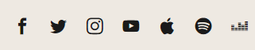
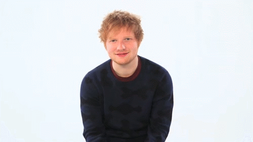

es un cantante y compositor británico.A corta edad, comenzó a cantar en la iglesia a la que asistía y también aprendió a tocar la guitarra.A los dieciséis años abandonó la escuela secundaria, y se trasladó a Londres para perseguir una carrera artística. Después de publicar un EP de forma independiente a principios de 2011, captó la atención de Elton John quien lo puso en contacto con el sello Asylum Records y firmó un acuerdo de grabación. En septiembre de 2011 lanzó su álbum debut +, que tuvo un éxito comercial y en la lista musical de discos de Reino Unido.
Puedes seguirlo atraves de sus Redes Sociales
 Minions ipsum hana dul sae uuuhhh baboiii jeje underweaaar hana dul sae daa bee do bee do bee do bee do bee do bee do poulet tikka masala. Tatata bala tu jiji hahaha tulaliloo tatata bala tu potatoooo. Po kass uuuhhh hana dul sae bananaaaa daa tatata bala tu wiiiii hahaha daa. Me want bananaaa! me want bananaaa! Chasy poulet tikka masala poulet tikka masala ti aamoo! Hahaha daa me want bananaaa! Pepete.
Minions ipsum hana dul sae uuuhhh baboiii jeje underweaaar hana dul sae daa bee do bee do bee do bee do bee do bee do poulet tikka masala. Tatata bala tu jiji hahaha tulaliloo tatata bala tu potatoooo. Po kass uuuhhh hana dul sae bananaaaa daa tatata bala tu wiiiii hahaha daa. Me want bananaaa! me want bananaaa! Chasy poulet tikka masala poulet tikka masala ti aamoo! Hahaha daa me want bananaaa! Pepete.
Minions ipsum hana dul sae uuuhhh baboiii jeje underweaaar hana dul sae daa bee do bee do bee do bee do bee do bee do poulet tikka masala. Tatata bala tu jiji hahaha tulaliloo tatata bala tu potatoooo. Po kass uuuhhh hana dul sae bananaaaa daa tatata bala tu wiiiii hahaha daa. Me want bananaaa! me want bananaaa! Chasy poulet tikka masala poulet tikka masala ti aamoo! Hahaha daa me want bananaaa! Pepete.